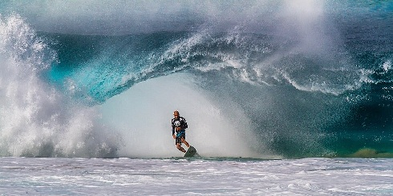

morecss
the difference between block tags and inline tags is that block tags start on a new line and take up the whole space, while inline tags do not start on a new line and only take up as much width as necessary.
margin is the space around a border. border is the line that surrounds an thing. padding is the space inside an things border.
i would use a figure tag when trying to put caption under an image.
css uses these units: (px), (em), (rem), (%), and (vw, vh).
